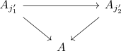
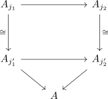
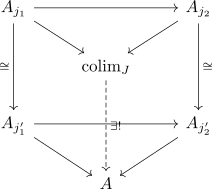
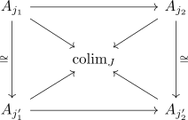
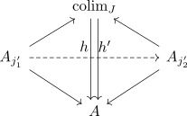
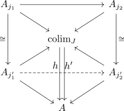
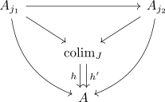

natural isomorphism between diagrams induce isomorphism between colimits
Proposition
Let $\mathcal{C}$ be a category, $J: \mathcal{J} \rightarrow \mathcal{C}$ and $J': \mathcal{J} \rightarrow \mathcal{C}$ be diagrams and
Then if the colimit $\mathrm{colim}_{J}$ exists, then also $\mathrm{colim}_{J'}$ exists and furthermore
are uniquely isomorphic
Proof
a) special case
corollary of
- isomorphisms under functors
- restriction of a functor
- colim functor , to those diagrams that admit a colimit
b)
Suppose we have an object $A \in \mathcal{C}$ such that

By natural isomorphism and isomorphism on the objects, we get natural isos

and hence by universal property a morphism

and furthermore morphisms to $A_{j_1'}$ defined by the factorization through to $A_{j_1}$

uniqueness
Suppose $h,h'$ are making the diagram commute

then also

commutes
and hence especially also

Hence by uniqueness of the mediating morphism, it follows, that